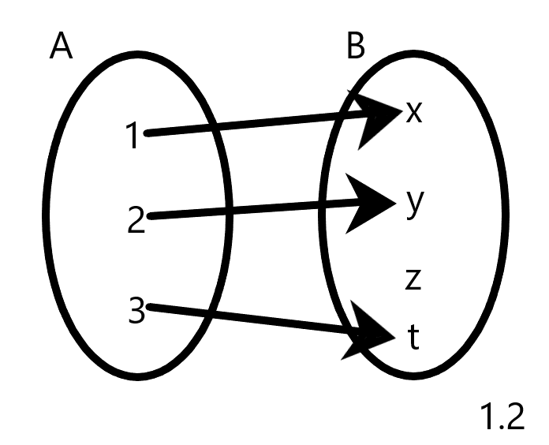
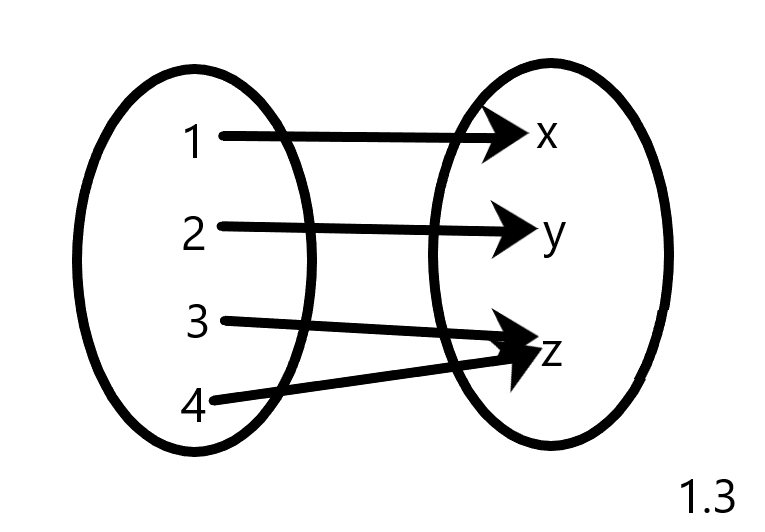
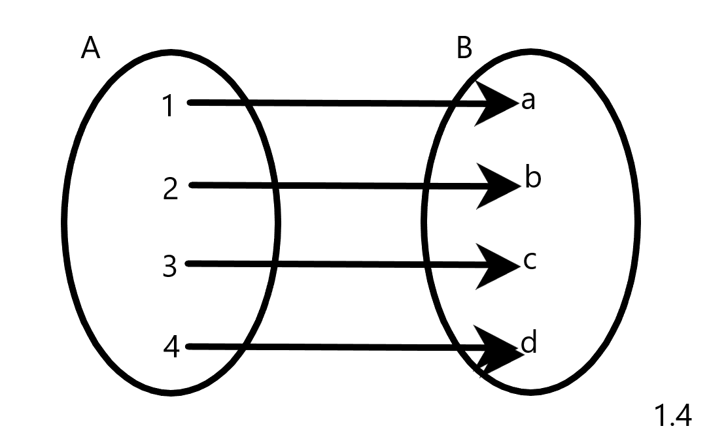
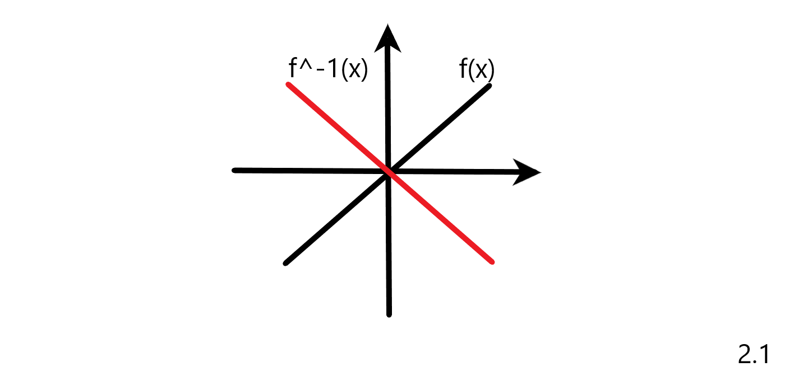
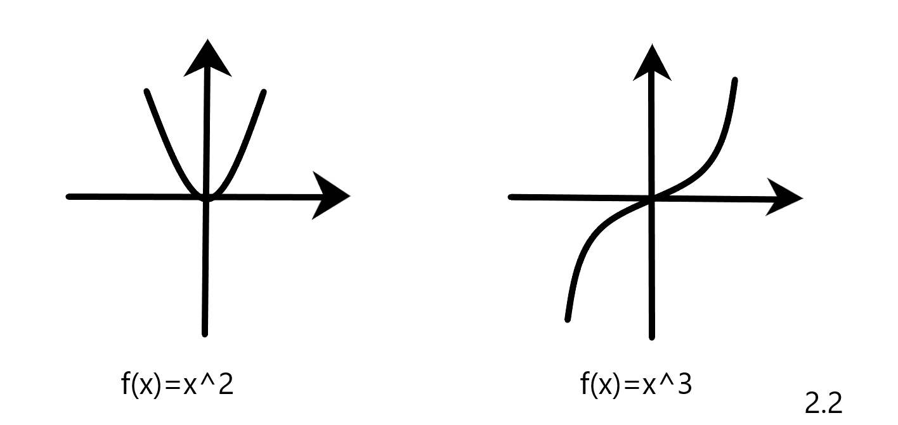

Injectivitate: O functie f:A->B se numeste injectiva (injectie) daca asociaza fiecarui element din domeniu (A) un element
din codomeniu (B).

Interpretare geometrica: O functie f este injectiva daca si numai daca orice paralela la axa Ox intersecteaza graficul functiei f in cel mult un punct.

Surjectivitate: O functie f:A->B se numeste surjectiva (surjectie) daca asociaza fiecarui element din codomeniu un element din domeniu.

Interpretare geometrica:O functie f este surjectiva daca orice paralela la Ox printr-un punct y din B de pe Oy intersecteaza Gf in cel putin un pct.
Bijectivitate: O functie este bijectiva daca este si surjectiva si injectiva. y ∈ B=> ∃ x ∈ A => f(x)=y
Interpretare geometrica:O functie f este surjectiva daca si numai daca orice paralela la axa Ox printr-un punct y ∈ B de pe Oy intersecteaza graficul functiei f in exact un punct.
Inversa unei functii: O functie f:A->B se numeste "inversabila" daca si numai daca exista functia g:B->A a.i. f∘g=g∘f=1A. Atunci g:B->A se numeste inversa functiei f si se noteaza f
-1.
Functia f este inversabila doar daca este bijectiva.
- Inversa unei functii este unica si simetrica fata de functie.

Paritatea functiei: O functie cu valori reale, f:A->B unde B ⊂ R, se numeste para daca oricare x ∈ A, f(x)=f(-x)). Graficul unei functii pare este simetric fata de axa Oy.
O functie f:A->B cu valori reale se numeste impara daca:
- (oricare x apartine A, f(x)= -f(-x) sau
- (oricare x apartine A, f(x)+f(-x)=0.
Graficul unei functii impare este simetric fata de origine.
